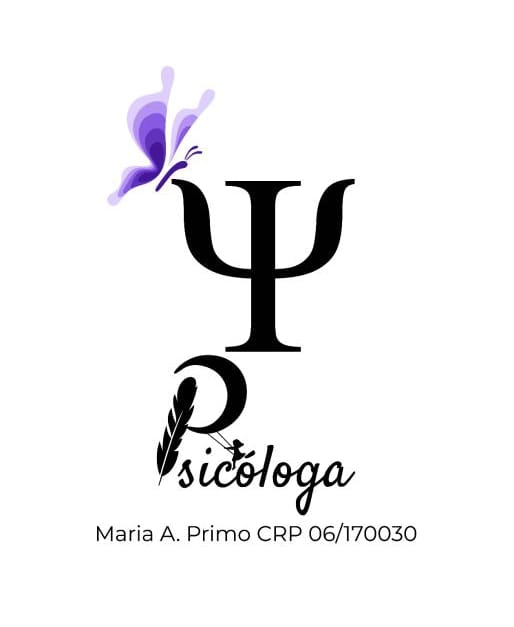

Psicoterapia infantil e Adulto
“Seja criança ou a criança no adulto, sempre existirá uma criança que precisa ser cuidada.”
Agende já seu Atendimento on-line.
psicomahprimo10@gmail.com
ou (11) 94958-0998
Suzano e região, para agendamento presencial.


Psicologa Infantil
Olá, Sejam Bem-Vindos!
Sou a Maria Antônia Primo, graduada em Psicologia (CRP 06/170030), com ênfase em Psicologia Clínica infantil e pós-graduação em Psicologia e Desenvolvimento infantil.
Atuo através da abordagem de Psicoterapia Winnicottiana, em tratamentos para, transtornos de ansiedade, transtorno depressivo e problemas de relacionamento afetivo.